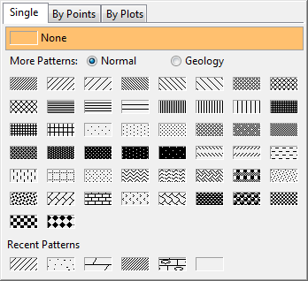
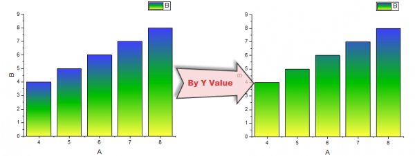
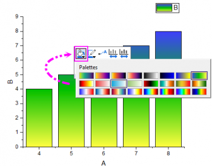

Die Registerkarte Muster (Details Zeichnung)
PD-Dialog-Pattern-Tab
Die Registerkarte Muster enthält Bedienelemente für die benutzerdefinierte Anpassung von Füllmustern, Rand, Formen, Transparenz und Gradientenfüllung für folgende Diagrammtypen:
| Bitte beachten Sie, sobald Sie Fläche unter Kurve füllen auf Bis zur nächsten Datenzeichnung füllen - Obige und untere Farben auf der Registerkarte Linie des Dialogs Details Zeichnung gesetzt haben, dass zwei separate Registerkarte Muster, Muster_oberhalb und Muster_unterhalb, angezeigt werden, auf denen Sie die obere und untere Fläche getrennt benutzerdefiniert anpassen können. |
Rand
Verbinden
(nur 3D-Wasserfalldiagramme) |
Legen Sie einen Linienverbindungstyp fest.
Details zu den Verbindungsoptionen lesen Sie unter Verbinden.
|
| Farbe |
Legen Sie eine Randfarbe fest. Sie können Keine für Farbe auswählen, damit die Musterfüllung keinen Rand hat.
Hilfe zu Origins Farbbedienelementen finden Sie unter Diagrammfarben benutzerdefiniert anpassen.
|
| Stil |
Wählen Sie einen Linienstil. Für Boxdiagramme gibt es eine Schaltfläche ... nach der Auswahlliste. Sie können auf sie klicken, um den Dialog Benutzerdefinierte gestrichelte Linie aufzurufen und den Stil der Striche benutzerdefiniert anzupassen.
|
| Breite |
Wählen Sie oder geben Sie eine Randlinienbreite aus. Die Linienbreite wird in Punkten gemessen, wobei 1 Punkt=1/72 Zoll entsprechen.
|
Seitenlinien zeigen
(nur 3D-Wasserfalldiagramme) |
Die Seitenlinien werden auf dem Wasserfalldiagramm gezeigt. Wenn das Kontrollkästchen aktiviert ist, wird das Kontrollkästchen Basislinie zeigen verfügbar.
|
Basislinie zeigen
(nur 3D-Wasserfall) |
Die Basislinie wird auf dem Wasserfalldiagramm gezeigt.
Bitte beachten Sie, dass die Basislinienposition auf Null oder das Minimum des Y-Achsenwerts gesetzt werden kann. Sie wird über die Option Basisebene bei auf der Registerkarte Umriss gesteuert.
|
Füllung
Farbe
Legen Sie eine Füllfarbe fest. Wählen Sie Kein aus, um eine transparente Füllung anzuzeigen. Hilfe zu Origins Farbbedienelementen finden Sie unter Diagrammfarben benutzerdefiniert anpassen. Wenn Auto aktiviert ist, verwendet Origin eine hellere Version der Rahmenfarbe für die Füllfarbe.
Farbabbildung auf(nur 2D-Boxdiagramm)
Für gruppierte Boxdiagramme können Sie diese Option verwenden, um die Farabbildung der Füllfarbe für die Boxen mit der Spaltenbeschriftungszeile durchzuführen. Auto bedeutet, dass der Spaltenindex für die Farbabbildung der Füllfarbe verwendet wird.
Bitte beachten Sie, dass die Option Füllfarbe nicht verfügbar ist, wenn Farbabbildung auf ausgewählt ist.
Muster (nur 2D-Diagramme und 3D-Balkendiagramme)
Legen Sie fest, wie das Muster mit Hilfe der Musterauswahl gefüllt wird, ähnlich der Funktionsweise der Farbauswahl.

_Pattern_Tab/Tip_icon.png) |
Sie können Ihre eigenen benutzerdefinierten Füllmuster zur Mustergalerie hinzufügen (Hinweis: Sie werden am Ende der Liste hinzugefügt). Öffnen Sie Ihren Anwenderdateiordner (UFF) und erstellen Sie einen Ordner /Muster. Erstellen Sie dann die Unterordner /Geologie und /Normal. Speichern Sie eine EMF-Datei von Ihrem benutzerdefinierten Muster in dem entsprechenden Unterordner (z. B. /Muster/Geologie). Ihr benutzerdefiniertes Muster wird nun in der Galerie angezeigt.
|
Registerkarte Einzeln: Einzelnes Muster auf alle Punkte von allen gruppierten Zeichnungen anwenden
Wählen Sie ein Muster aus der Standardmusterliste, Normal oder Geologie, um alle Säulen, Balken, Kreissegmente oder Flächen zu füllen.
Sobald Sie Geologie wählen, werden die Bedienelemente unten angezeigt, um die benutzerdefinierte Anpassung des Musters zuzulassen: _Pattern_Tab/Pattern_Geology_Controls.png)
Es gibt zwei Methoden, um die ausgewählten Muster anzuwenden: Strecken und Proportional:
- Wählen Sie Strecken, um das Muster zu strecken und die gesamte aktuelle Fläche zu füllen. In diesem Modus dürfen Sie den XY-Versatz nur festlegen, um das Muster zu verschieben, insbesondere für das asymmetrische Muster.
- Wählen Sie Proportional, um die Fläche mit den ausgewählten Mustern unter Verwendung des ursprünglichen Seitenverhältnisses zu füllen. In diesem Modus können Sie die Skalierung des Musters durch Festlegen der X-Skalierung vergrößern/verkleinern und das Muster horizontal durch Festlegen des X-Versatzes verschieben.
Registerkarte Nach Punkten: Musterliste auf alle Punkte der aktuellen Zeichnung regelmäßig anwenden
Mit den Optionen auf dieser Registerkarte können Sie:
- einen Datensatz festlegen, um das Füllmuster für alle Säulen, Balken, Kreissegmente etc. der aktuellen Zeichnung.
- ein Anfangsmuster auswählen, um alle Säulen, Balken, Kreissegmente etc. sequenziell mit der Standardmusterliste zu füllen.
- eine bestehende Musterliste auswählen, um alle Säulen, Balken, Kreissegmente etc. der aktuellen Zeichnung sequenziell zu füllen.
Jede Auswahl auf dieser Registerkarte ruft die Musterliste auf.
Registerkarte Nach Zeichnungen: Musterinkrementliste auf alle gruppierten Zeichnungen anwenden
Diese Registerkarte ist nur für gruppierte Diagramme verfügbar. Wählen Sie eine Musterinkrementliste, um die gruppierten Diagramme zu variieren.
Musterfarbe (nur 2D-Diagramme und 3D-Balkendiagramme)
Wenn ein Muster in der Liste Muster ausgewählt wird, ist die Schaltfläche Musterfarbe verfügbar. klicken Sie auf diese Schaltfläche, um die Farbauswahl zu öffnen. Mit ihrer Hilfe können Farben für ausgewählte Muster festgelegt werden.
Wenn Auto aktiviert ist, verwendet Origin eine hellere Version der Schaltfläche Rahmenfarbe für die Musterfarbe.
Breite (nur 2D-Diagramme)
Legt die Breite der Linien in dem Füllmuster fest. Die Linienbreite wird in Punktgröße gemessen, wobei 1 Punkt = 1/72 Zoll ist.
Beleuchtungseffekte durch dunklere Seiten hinzufügen (3D-Balken/Wände)
Aktivieren Sie dieses Kontrollkästchen, um Beleuchtungseffekte für die Balken durch Abdunkeln der Seitenbereiche hinzuzufügen.
Gradientenfüllung
Dieses Gruppenbedienelement wird verwendet, um Musterfarben allmählich zu füllen, und ist verfügbar, wenn die Füllfarbe der aktuellen Zeichnung auf eine beliebige Farbe gesetzt ist.
Modus
Legt den Modus der Gradientenfüllung fest.
- Keine: Keine Gradientenfarbänderung
- Eine Farbe: Eine Farbe verwandelt sich allmählich von schwarz in weiß.
- Zwei Farben: Die Füllung verwandelt sich allmählich von einer Farbe in eine andere.
- Mehr Farben: Die Füllung ändert sich allmählich entsprechend einer festgelegten Palette.
Nach YZ-Wert
Wenn der Modus Mehr Farben gewählt ist, wird das Kontrollkästchen Nach Y-Wert oder Nach Z-Wert angezeigt.
Standardmäßig wird die Gradientenfüllung gemäß dem Y-Maximum der aktuellen Zeichnung angewendet. Aktivieren Sie das Kästchen Nach Y-Wert oder Nach Z-Wert. Die Füllfarben ändern sich allmählich gemäß dem YZ-Wert bei jedem Datenpunkt entlang der Richtung von Y-Achse oder Z-Achse.

Bei einigen speziellen Diagrammtypen wie Flächen- und Wasserfalldiagramm, wird dieses Kontrollkästchen nicht angezeigt.
Helligkeit
Diese Option ist nur verfügbar, wenn der Modus auf eine Eine Farbe gesetzt ist. Die Helligkeit (in %) der Gradientenfüllfarbe wird hier mit einem Schiebeelement eingestellt und variiert zwischen schwarz und weiß.
2. Farbe
Diese Option ist nur verfügbar, wenn der Modus auf eine Zwei Farben gesetzt ist. Wählen Sie die zweite Farbe, die zum Erstellen des Gradienten verwendet werden soll.
Hinweis: Wenn Sie bei 2D-Diagrammen Zwei Farben als Modus ausgewählt haben, unterstützt das Bedienelement der 2. Farbe die Farbauswahl auf beiden Registerkarten, Einzeln und Nach Punkten. Wenn bei 3D-Diagrammen der Modus auf Zwei Farben gesetzt ist, unterstützt das Bedienelement der 2. Farbe die Farbauswahl nur auf der Registerkarte Einzeln.
Hilfe zu Origins Farbbedienelementen finden Sie unter Diagrammfarben benutzerdefiniert anpassen.
Palette
Diese Option ist nur verfügbar, wenn der Modus auf eine Mehr Farben gesetzt ist. Wählen Sie eine Palette aus, um die Farbänderung auf die Füllfläche anzuwenden.
Wenn die Gradientenfüllung angewendet wurde, können Sie auf die Zeichnung klicken. Verwenden Sie die Schaltfläche Füllfarbe auf der Minisymbolleiste, um eine andere Palette aus der Palettenliste auszuwählen.

Richtung
Diese Option ist verfügbar, wenn der Modus auf Eine Farbe, Zwei Farben oder Mehr Farbenfestgelegt ist. Mit ihr können Sie die Richtung festlegen, in der sich die Füllfarbe allmählich verändert.
Sobald Nach YZ-Wert gewählt wurde, sind nur die Richtungen Oben Unten und Unten Oben verfügbar.
Für das radiale Balkendiagramm in einem polaren Koordinatensystem unterstützt Origin diese Richtungen für das allmähliche Füllen mit Farbe:
- Radial nach innen: vom Äußeren zum Inneren
- Radial nach außen: vom Inneren zum Äußeren
- Radial Mitte nach außen: "Mitte" bedeutet Balkenmitte, "nach außen" bedeutet, die Farbe ändert sich von der Mitte aus zu den zwei radialen Rändern hin.
- Radial Mitte nach innen: "Mitte" bedeutet Balkenmitte, "nach innen" bedeutet, die Farbe ändert sich von den zwei radialen Rändern zur Mitte hin.
Transparenz
Wenden Sie Transparenz auf die Füllfläche an. Bewegen Sie den Schieber oder geben Sie eine ganze Zahl von 0 (keine Transparenz) bis 100 (vollständige Transparenz) ein.
Wenn Sie sich für Bis zur nächsten Datenzeichnung füllen - Obige und untere Farben auf der Registerkarte Linie entscheiden, wird ein zweites Muster hinzugefügt (Muster_unterhalb). Diese Registerkarte hat ihre eigene Transparenzsteuerung. Das Aktivieren des Kontrollkästchens Auto (Standard) bewirkt, dass der Transparenzeinstellung von Muster_oberhalb gefolgt wird.
Linientransparenz folgen
Im Fall von Füllflächen- und 2D-Wasserfalldiagrammen zwingt das Aktivieren des Kontrollkästchens Linientransparenz folgen die Füllflächen, der Transparenzeinstellung der Linie zu folgen.
Transparenz nur für Füllung
Wenn Sie die obige Transparenz nur auf die Füllung an. Die Transparenz des Rahmens sollte 0 sein. Sie wird in Säulen-, Balken-, Box- und Kreisdiagrammen unterstützt.
Für Füllflächen- und 2D-Wasserfalldiagrammen ist dieses Bedienelement nur verfügbar, wenn Sie das Kontrollkästchen Linientransparenz folgen deaktiviert haben.
Form (nur 3D-Balkendiagramme)
Sechs Balkenformen für 3D-Balken:
-
- Prisma/Box: Die Balken werden als Prisma/Box gezeigt.
- Zylinder: Die Balken werden als Zylinder gezeigt.
- Gesamte Pyramide: Die Balken werden als vollständige Pyramide gezeigt.
- Teilpyramide: Der höchste Datenpunkt wird als vollständige Pyramide gezeigt und die anderen Datenpunkte als (abgeschnittene) Teilpyramiden.
- Gesamter Kegel: Die Balken werden als vollständiger Kegel gezeigt.
- Teilkegel: Der höchste Datenpunkt wird als vollständiger Kegel gezeigt und die anderen Datenpunkte als (abgeschnittene) Teilkegel.
Mit dieser Auswahlliste Form können Sie:
- Eine einzelne Form für die aktuelle Zeichnung anwenden.
- Die Form der Balken in der aktuellen Zeichnung fortlaufend festlegen, indem Sie von einer bestimmten Anfangsform ausgehend mittels einer Liste von Formen inkrementieren.
- Einen Datensatz von ganzen Zahlen oder kategorialen Werten, deren Index sich auf Formen in einer spezifischen Formliste beziehen, verwenden. Einzelheiten finden Sie auf dieser Seite.
- Verwenden Sie die gruppierten Formen, die auf der Registerkarte Gruppe mit dem Inkrementeditor für die gruppierten 3D-XYY/XYZ-Balken festgelegt werden.
Vorschau
Origin zeigt Ihre aktuellen Registerkarteneinstellungen in diesem Vorschaufeld an.